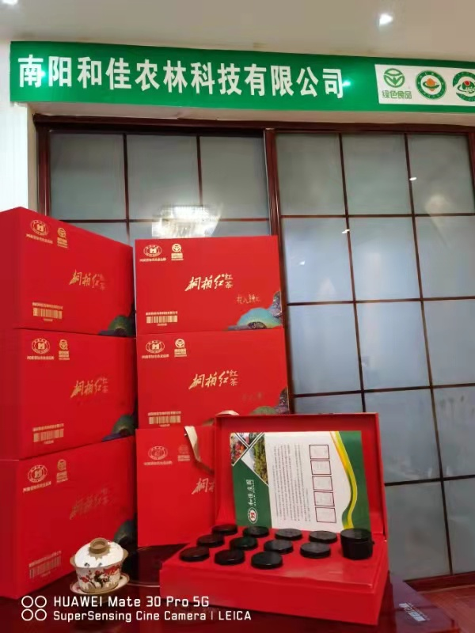

桐柏红是红茶的一种，产自河南南阳桐柏县。省委书记卢展工在南阳考察农业生产时，当得知大量的夏秋茶叶资源自生自灭时，不无惋惜地说，要加大夏秋茶采摘力度，尝试开发新的茶叶产品，可以开发红茶，增加群众收入。卢展工还给桐柏红茶的“新生命”起了个厚重而响亮的名字：桐柏红。桐柏县积极落实卢书记的指示精神，于2010年9月研制出 “桐柏红”茶。卢书记仔细品味“桐柏红”后，给予高度评价。
地处淮河之源，佛教圣地，盘古之乡的河南桐柏，由于独特的地理位置和自然环境，自古以来就盛产茶叶。唐代的茶圣陆羽曾在《茶经》上对古义阳郡（即桐柏东部）茶的品质做了详细评价，民间曾有流传：“借问陆君何处去，品茗只向太白峰”就是对“桐柏山茶”历史之悠久的最好诠释。有《桐柏县之志》记载为证，到宋代时桐柏已被列为全国十大茶场之一。宋代的一位名士在游览太白峰诸多名胜品完桐柏山茶后，特地写下一副传诵的佳联：“阁楼三层读书论奇，泉水九壑听瀑蒸茗”。
